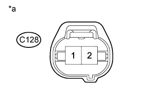

DTC P143C Низкий уровень сигнала в цепи "B" управления перепуском охладителя РОГ |
DTC P143D Высокий уровень сигнала в цепи "B" управления перепуском охладителя РОГ |
| Режим поездки при обнаружении DTC | Условие обнаружения DTC | Неисправный участок |
| Зажигание включено (IG) в течение 3 с | Обрыв или короткое замыкание в цепи электровакуумного клапана (для перепускного клапана РОГ № 2) в течение 3 с (логика диагностирования за 1 поездку). |
|
| Режим поездки при обнаружении DTC | Условие обнаружения DTC | Неисправный участок |
| Зажигание включено (IG) в течение 3 с | Обрыв или короткое замыкание в цепи электровакуумного клапана (для перепускного клапана РОГ № 2) в течение 3 с (логика диагностирования за 1 поездку). |
|
| 1.ПРОВЕРЬТЕ ЭЛЕКТРОВАКУУМНЫЙ КЛАПАН (ДЛЯ ПЕРЕПУСКНОГО КЛАПАНА РОГ № 2) |
Проверьте электровакуумный клапан (для перепускного клапана РОГ № 2) (Нажмите здесь).
|
| ||||
| OK | |
| 2.ПРОВЕРЬТЕ ЭЛЕКТРОВАКУУМНЫЙ КЛАПАН (ДЛЯ ПЕРЕПУСКНОГО КЛАПАНА РОГ № 2) (ЦЕПЬ ПИТАНИЯ) |
|  |
Отсоедините разъем электровакуумного клапана (для перепускного клапана РОГ № 2).
Измерьте напряжение в соответствии со значениями, приведенными в таблице.
| Контакты для подключения диагностического прибора | Положение переключателя | Заданные условия |
| C128-1 - масса | Зажигание включено (IG) | 11-14 В |
| *a | Вид спереди разъема со стороны жгута проводов: (к электровакуумному клапану (для перепускного клапана РОГ № 2)) |
Подсоедините разъем электровакуумного клапана (для перепускного клапана РОГ № 2).
|
| ||||
| OK | |
| 3.ПРОВЕРЬТЕ ЖГУТ ПРОВОДОВ И РАЗЪЕМ (ЭЛЕКТРОВАКУУМНЫЙ КЛАПАН (ДЛЯ ПЕРЕПУСКНОГО КЛАПАНА РОГ № 2) – ECM) |
Отсоедините разъем электровакуумного клапана (для перепускного клапана РОГ № 2).
Отсоедините разъем ЭБУ.
Измерьте сопротивление в соответствии со значениями, приведенными в таблице ниже.
| Контакты для подключения диагностического прибора | Условие | Заданные условия |
| C128-2 - C57-22 (ECB2) | Всегда | Менее 1 Ом |
| Контакты для подключения диагностического прибора | Условие | Заданные условия |
| C128-2 или C57-22 (ECB2) - масса | Всегда | 10 кОм или более |
Подсоедините разъем электровакуумного клапана (для перепускного клапана РОГ № 2).
Подсоедините разъем ECM.
|
| ||||
| OK | |
| 4.ЗАМЕНИТЕ ECM |
Замените ECM (Нажмите здесь).
|
| ||||
| 5.ЗАМЕНИТЕ ЭЛЕКТРОВАКУУМНЫЙ КЛАПАН (ДЛЯ ПЕРЕПУСКНОГО КЛАПАНА РОГ № 2) |
Замените электровакуумный клапан (для перепускного клапана РОГ № 2).
|
| ||||
| 6.ОТРЕМОНТИРУЙТЕ ИЛИ ЗАМЕНИТЕ ЖГУТ ПРОВОДОВ ИЛИ РАЗЪЕМ |
Отремонтируйте или замените жгут проводов или разъем.
| ДАЛЕЕ | |
| 7.ПРОВЕРЬТЕ, УСТРАНЕНА ЛИ ДОЛЖНЫМ ОБРАЗОМ НЕИСПРАВНОСТЬ |
Подсоедините портативный диагностический прибор к DLC3.
Сбросьте коды DTC (Нажмите здесь).
Включите зажигание (IG) на 3 с.
Войдите в следующие меню: Powertrain / Engine and ECT / DTC.
Убедитесь, что DTC не выводится снова.
| ДАЛЕЕ | ||
| ||